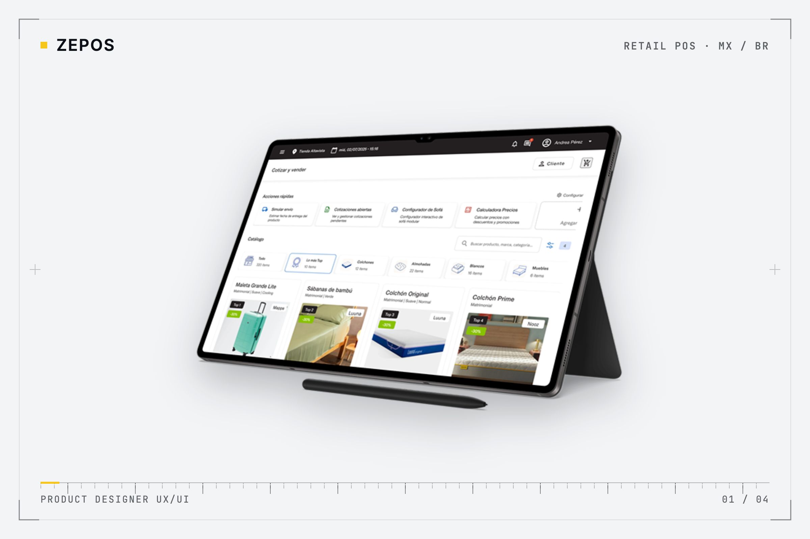
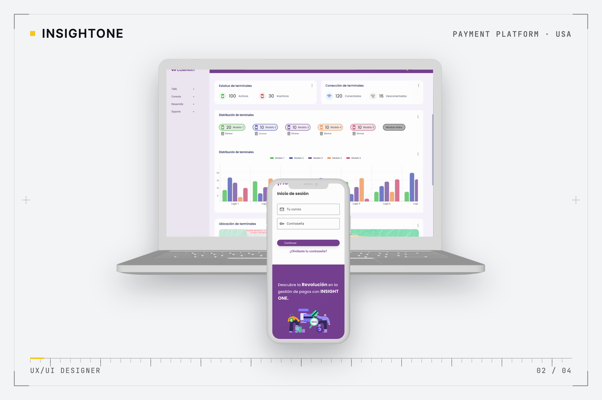
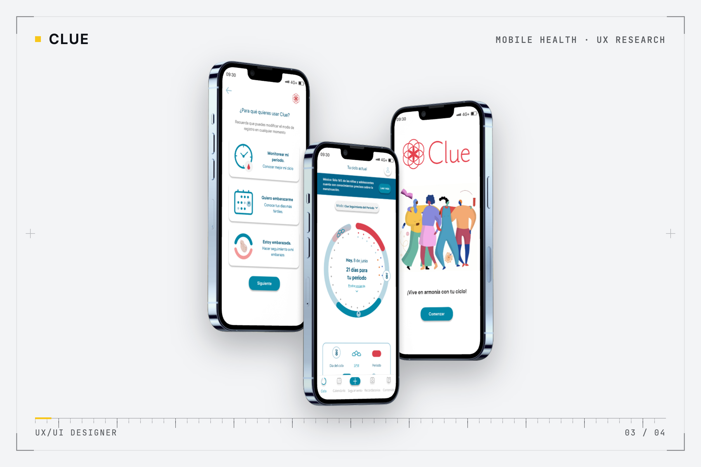
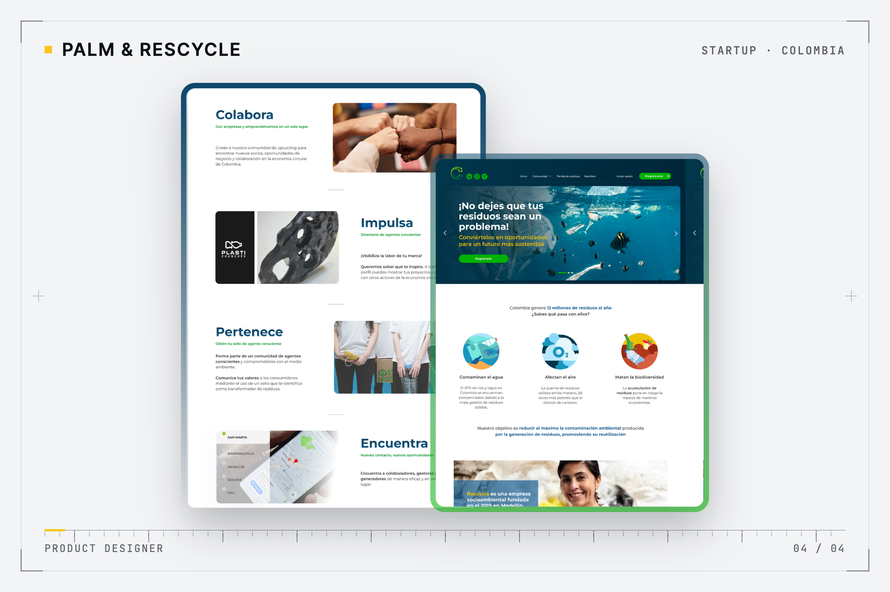
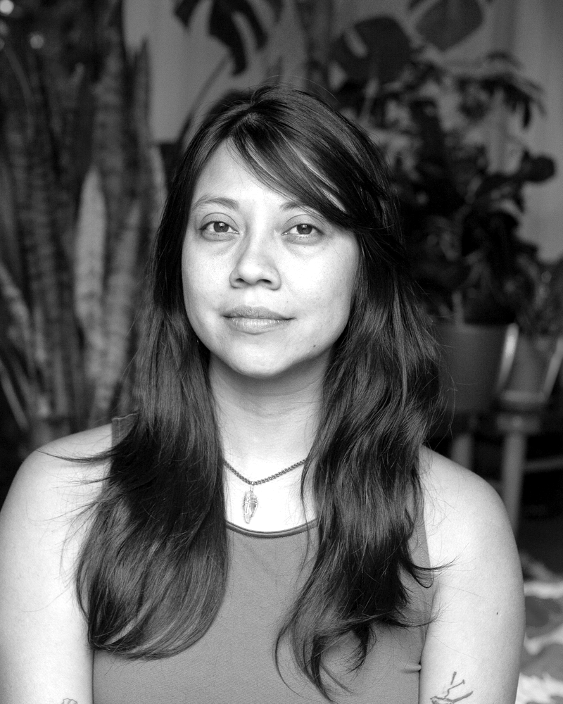

Product Designer · UX/UI · Sistemas complejos
Rediseñé el POS de 200+ tiendas empezando por una pregunta: ¿dónde se atoran las personas? Product Designer UX/UI en pagos, retail omnicanal y enterprise SaaS.
Selected work · 01—04
De operaciones críticas a experiencias transaccionales: diseño productos donde la complejidad técnica debe convertirse en claridad operativa.

De un POS frágil a una operación comercial más resiliente.
Punto de venta de 200+ tiendas, donde rendimiento, velocidad y fiabilidad afectan directamente las ventas. Lideré el rediseño end-to-end tras una falla crítica, con 60–90% menos errores.
50%+ más rápidos: armado de carrito y envío →

Simplificar flujos de pago bajo restricciones de seguridad y cumplimiento.
Plataforma de pagos B2B de una empresa certificada PCI-DSS, del pitch con nivel C a la entrega, con roles para tres tipos de usuario.
−40% tickets de soporte →

Que registrar tu salud deje de sentirse como una tarea.
Rediseño de onboarding, home y seguimiento a partir de una auditoría UX, benchmarking y pruebas con usuarios.
29 usuarios validaron el prototipo · 80/100 →

Explicar la economía circular en segundos y convertir curiosidad en uso.
Landing y flujo de comunicación con iteraciones semanales y mejoras de UX writing.
+15% retención de usuarios →

Melany Olivares · Product Designer
Quién diseña
Vengo de política pública y hoy diseño producto. Además soy permacultora: observo antes de intervenir, mido lo que no se ve y dejo que el sistema encuentre su cauce.
Experiencia
4+ años diseñando producto en retail, pagos y salud, después de 10 años como Project Manager y consultora en políticas públicas. CV completo →
Product Designer UX/UIPOS omnicanal · Remoto
50%+ más rápidos: carrito y envíoProduct Designer UX/UIAgnostiko · Pagos B2B · Remoto
−40% tickets de soporteUX/UI · Caso de estudioApp de salud
29 usuarios validaronUX/UI y tareas de productoStartup de economía circular
+15% retenciónUX/UIStartup de pagos · Chile
End-to-end flujo de compraProject Manager y consultoraGobierno abierto · Comunicación política · México
10 años facilitando entre sectoresNivel según escala CEFR (A1–C2)
Product discoveryUX strategyDesign systemsUser researchUsability testingAccesibilidadStakeholder managementPCI-DSS
FigmaFigJamMiroMazeDovetailSentryGrafanaJiraClaude CodeChatGPTCursor
Diseño UX/UI, Laboratoria (2023) · Lic. Comunicación Social, UAM · Lic. Ciencias Políticas, UNAM
Busco mi próximo sistema complejo. Hablemos.